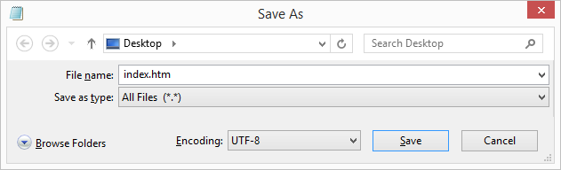
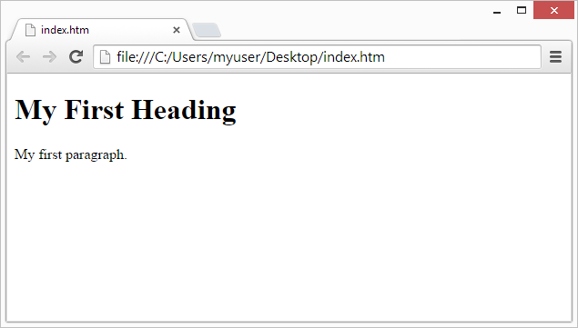

Write HTML Using Notepad or TextEdit
Web pages can be created and modified by using professional HTML editors.
However, for learning HTML we recommend a simple text editor like Notepad (PC) or TextEdit (Mac).
We believe using a simple text editor is a good way to learn HTML.
Follow the four steps below to create your first web page with Notepad or TextEdit.
Step 1: Open Notepad (PC)
<b>Windows 8 or later:</b>
Open the <b>Start Screen</b> (the window symbol at the bottom left on your screen). Type <b>Notepad</b>.
<b>Windows 7 or earlier:</b>
Open <b>Start > Programs > Accessories > Notepad</b>
Step 1: Open TextEdit (Mac)
Open <b>Finder > Applications > TextEdit</b>
Also change some preferences to get the application to save files correctly. In <b>Preferences > Format</b> > choose <b>"Plain Text"</b>.
Then under "Open and Save", check the box that says "Ignore rich text commands in HTML files".
<b>Then open a new document to place the code.</b>
Step 2: Write Some HTML
Write or copy some HTML into Notepad.
<!DOCTYPE html> <html> <body> <h1>My First Heading</h1> <p>My first paragraph.</p> </body> </html>

Step 3: Save the HTML Page
Save the file on your computer. <b>Select File > Save as</b> in the Notepad menu.
Name the file <b>"index.htm"</b> and set the encoding to <b>UTF-8</b> (which is the preferred encoding for HTML files).
You can use either .htm or .html as file extension. There is no difference, it is up to you.
Step 4: View the HTML Page in Your Browser
Open the saved HTML file in your favorite browser (double click on the file, or right-click - and choose "Open with").
The result will look much like this:
